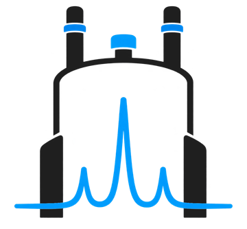
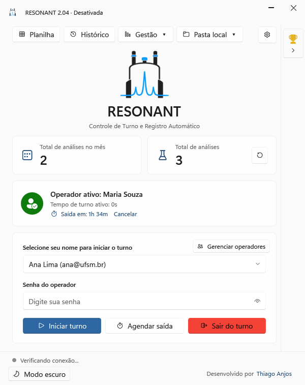

RESONANT
Controle de turno e registro automático das análises de RMN
O que é
O RESONANT é um programa para Windows que acompanha, em tempo real, as análises feitas no espectrômetro de RMN da Bruker (TopSpin e IconNMR). Cada experimento novo é vinculado ao operador que está em turno e registrado automaticamente numa planilha do Google Sheets do próprio laboratório.
Como funciona
- O operador escolhe o nome, digita a senha e inicia o turno.
- O RESONANT lê os arquivos
acqusetitlede cada experimento: data, núcleo, pulso, solvente, instituição e solicitante. - A análise vai para o histórico local e para a planilha do laboratório. Sem internet, fica na fila até a conexão voltar.
- O laboratório conecta a própria conta Google: o RESONANT cria a planilha e guarda os backups no Drive dessa conta, com acesso apenas aos arquivos que ele mesmo cria.
- Painel de uso, relatórios mensais e anuais por instituição e ranking dos operadores.

English
What it is
RESONANT is a Windows program that monitors the analyses run on a Bruker NMR spectrometer (TopSpin and IconNMR) in real time. Each new experiment is linked to the operator on shift and automatically logged to the laboratory's own Google Sheets spreadsheet. The lab connects its own Google account: RESONANT creates the spreadsheet and stores backups in that account's Drive, with access only to the files it creates itself.